Район строительства -
1.2. Район строительства -
1.3. Климатические данные
Площадь поперечного сечения каналов, воздуховодов, живого сечения воздухораспределителей, м2:

где L – расход воздуха, [м3/ч],
𝝑 рек - рекомендуемая скорость движения воздуха в канале, воздуховоде, распределителе, м/с.
Принимаются к установке каналы, воздуховоды, воздухораспределители с близкой по значению площадью сечения Ао и определяется их количество:

Определяем действительную скорость движения воздуха в каналах, воздуховодах, воздухораспределителях, м/с:

Расчет ведется по рекомендуемым скоростям.
Рассчитаем площадь сечения вертикальных каналов и воздухораспределителей, устанавливаемых на них. Результаты сводим в таблицу:
Длина пути струи до точки входа в рабочую зону x равна:

Х = + - = ?
Расход воздуха через один воздухораспределитель равен:

где N - количество решеток
Ориентировочная площадь живого сечения A_ор для прохода воздуха:

где v_ор – рекомендуемая скорость воздуха в живом сечении, которая находится в пределах от 1 до 2 м/с.
Фактическая скорость воздуха на выпуске:
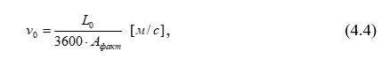Скорость на оси струи v_x в точке входа в рабочую зону и отклонение температуры от температуры рабочей зоны 〖Δt〗_x в этой же точке:
где 〖Δt〗_0 – разность температуры воздуха в рабочей зоне и температуры притока,
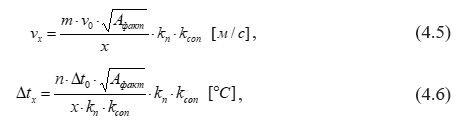k_n - коэффициент неизотермичности
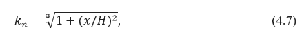K_con - коэффициент стеснения
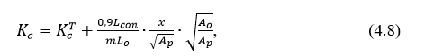где Aр – площадь помещения перпендикулярная потоку воздуха, приходящаяся на один воздухораспределитель, м2.
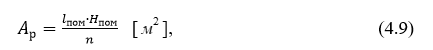где lпом, Hпом – длина и высота помещения соответственно;
N – количество приточных каналов в помещении.
Допустимые значения скорости и температуры приточного воздуха по СП 60.13330.2012 Приложение Б и В равны:
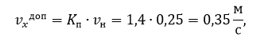где K_п=1,4 – коэффициент перехода от нормируемой скорости движения воздуха в помещении к максимальной скорости в струе воздуха, в зоне прямого воздействия струи воздуха в пределах основного участка при лёгкой категории работ (по табл. Б.1 СП 60.13330.2012), v_н=0,25 м/с – допустимая скорость движения воздуха помещение категории 3а по ГОСТ 30494-2011.
Δt_2 – допустимое отклонение температуры воздуха в струе приточного воздуха от нормируемой температуры воздуха в рабочей зоне в зоне прямого воздействия приточной струи для общественных зданий Δt_2=1,5 ℃.
Сравнивая допустимые и получившиеся значения получаем, что оба условия выполняются.
Для проверки условия настилания определим геометрическую характеристику струи:
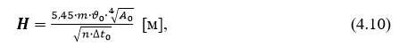Аэродинамический расчет механических систем вентиляцииD и кондиционирования воздуха проводят с целью определения диаметров или размеров прямоугольных сечений воздуховодов или каналов, нахождения потерь давления, возникающих при движении воздуха в вентиляционной сети и подбора вентилятора.
1. Ориентировочную площадь сечения воздуховода fор, м , определяют по величине раcхода воздуха на участке L и по рекомендуемой скорости движения воздуха vор, равной 6–7 м/с на магистралях и 4–5 м/с – в воздухозаборной шахте и на конечных ответвлениях:
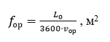2. Затем вычисляют предварительный размер воздуховода на участке:
ахb и округляют до ближайшего стандартного размера. Необходимо принимать размеры воздуховодов строго стандартного размера;
3. После выбора диаметра сечения воздуховода уточняют скорость воздуха:
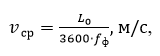где 𝑓ф – фактическая площадь сечения, м2:
𝑓ф = 𝑎 ⋅ 𝑏
4. Вычисляем dэкв:
dэкв = 2ab/(a+b)
5. Далее по величине 𝑣𝑐р и dэкв определяют удельные потери давления на трение R, Па/м по формуле:
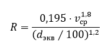6. Полные потери давления на трение для всего участка, получают умножением удельных потерь R на длину участка l, Rl, Па.
7. Затем определяют динамическое давление на участке:
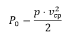8. где ρ – плотность воздуха при стандартных условиях ρ = 1,2 кг/м3; Все данные заносим в таблицы
9. Далее на участке выявляют местные сопротивления, определяют коэффициенты местных сопротивлений (КМС) ξ и вычисляют сумму КМС на данном участке (Σξ). Все местные сопротивления заносим в таблицы
В состав приточной установки входят приемная секция с вертикальным воздушным клапаном, блок фильтра, блок водяного нагревателя и блок с радиальным вентилятором.
Приемная секция
Аэродинамическое сопротивление приемной секции:
где,
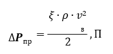𝜉 – КМС приемной секции с регулирующим клапаном, равный 2,6.
𝜌 и 𝑣 – плотность и скорость воздуха в приемной секции.
Тогда
Длина приемной секции – 700 мм
Секция фильтров
Выбираем ячейковый фильтр класса G3 с средней степенью очистки, так как к обслуживаемым помещениям предъявлены средние требования по чистоте воздуха с тонкой очисткой
Выбираем фильтр с длиной секции 260 мм, потери составляют ∆𝑷ф = 150 [Па]
Секция водяного воздухонагревателя